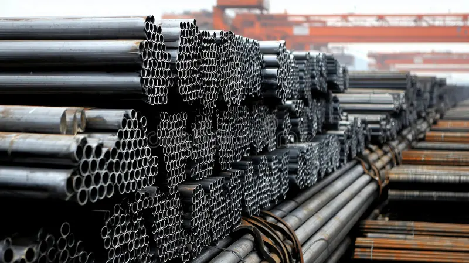

Materiales & Estructuras¿Es confiable el acero importado? Lo que debes saber antes de comprar
Buena parte del fierro que circula hoy en el mercado chileno es importado, y su calidad puede variar bastante entre un proveedor y otro. Antes de comprar, revisa que las barras vengan marcadas con el sello de la norma NCh204 y exige el certificado de calidad al vendedor.
En Los Maestros trabajamos solo con acero certificado y guardamos la documentación de cada partida, para que puedas respaldar tus obras y cierres perimetrales sin sorpresas.